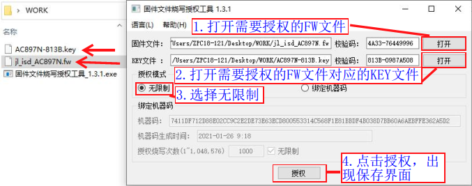
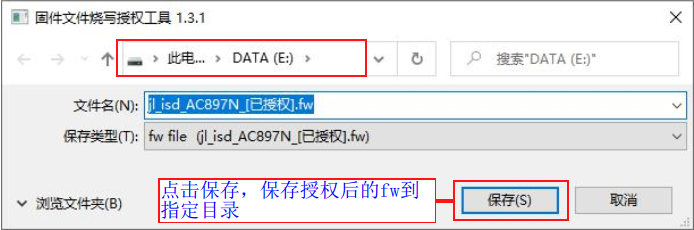
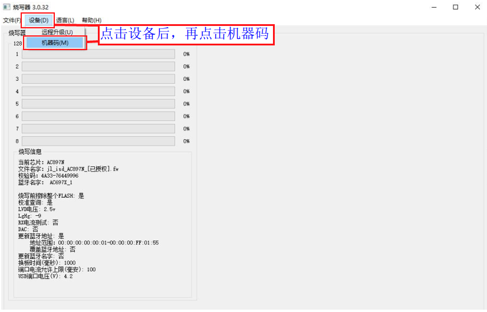
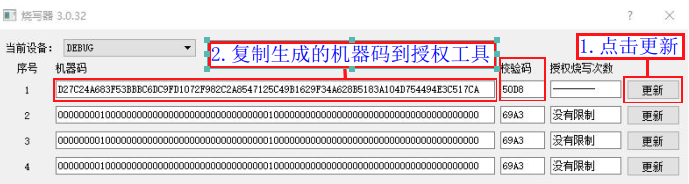
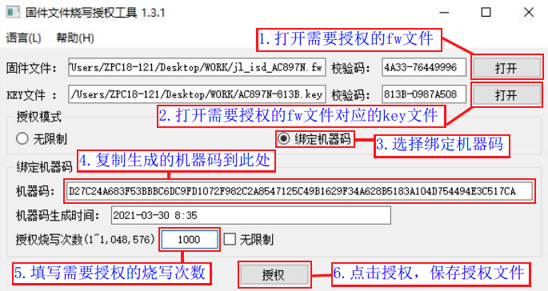
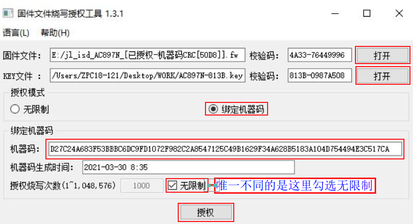
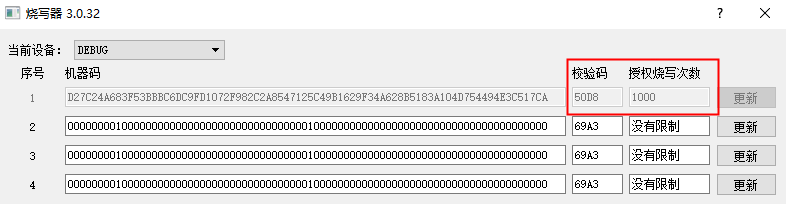

2.10. Authorized Programming Count Limit
2.10.1. Use case
For example, a developed fw programming file of target chip firmware may only be allowed to be programmed into 1000 chips by a specified programmer. After it has been programmed 1000 times, the programming file becomes invalid and can no longer be programmed by the programmer, which prevents others from profiting from it.
To implement this, you can apply an authorized programming count limit to the fw file.
Fw files for the 1-to-8 programmer must be authorized before they can be loaded and programmed. If the programming count of a programming file does not need to be limited, you can authorize it in unlimited mode.
2.10.2. Authorization modes
Fw/ufw files support two authorization modes: unlimited mode and machine code binding mode.
Unrestricted mode
A FW/UFW file authorized in this mode is not bound to any specific 1-to-8 programmer; any 1-to-8 programmer with a matching KEY can load and program it. If the programming count of a programming file does not need to be limited, you can authorize it in unlimited mode.
Machine-code binding mode
FW/UFW files authorized in this mode can be loaded and programmed only by the programmer to which the bound machine code belongs.
2.10.3. Creating a fw file authorized in unrestricted mode
[1] On the PC, double-click the firmware programming authorization tool executable
固件文件烧录授权工具_(版本号).exeto open it (contact Jieli's Shenzhen office to obtain this tool).[2] Perform steps 1–4 as shown in Generating an unrestricted authorized fw file. The save dialog shown in Saving an unrestricted authorized fw file appears; click Save to save the authorized fw file to the specified directory.
[3] After you click "Save" (保存), a message appears confirming that the file was saved and showing the exact save path, as shown in Message after saving the authorized fw file; click OK.

Generating an unrestricted authorized fw file

Saving an unrestricted authorized fw file

Message after saving the authorized fw file
2.10.4. Authorization in machine-code binding mode
2.10.4.1. Creating a fw file with a programming count limit
Machine code generation steps
[1] Open the PC tool control panel (see the "Open the PC tool control panel" subsection);
[2] As shown in Opening the machine code generation screen, click "Device" (设备) -> "Machine code" (机器码) to open the machine code generation screen;
[3] As shown in Machine code generation window, click "Update" (更新), then copy the generated machine code into the authorization tool to authorize the fw file;

Opening the machine code generation screen

Machine code generation window
Note
One programmer supports generating 4 machine codes, so 4 fw files with an authorized count limit can be made. Only the machine code with serial number 1 is used here as an example for authorizing an fw file; the procedure for generating the machine codes with other serial numbers and making their authorized fw files is the same.
Generating a fw file authorized with a machine code
[1] On the PC, double-click the firmware programming authorization tool executable
固件文件烧录授权工具_(版本号).exeto open the tool's interface;[2] Follow steps 1 to 6 shown in Generating a machine-code-authorized fw file; the save window shown in Save window for a machine-code-authorized fw file appears. Click "Save" (保存) to save the authorized fw file to the specified directory;
[3] After you click "Save" (保存), a message appears confirming that the file was saved and showing the exact save path, as shown in Message after saving the authorized fw file; click OK.

Generating a machine-code-authorized fw file

Save window for a machine-code-authorized fw file

Message after saving the authorized fw file
2.10.4.2. Creating a fw file without a programming count limit
The steps for making an fw file without a programming count limit are basically the same as those for making an fw file with a programming count limit. The only difference is that you check "Unlimited" (无限制) when making an fw file without a programming count limit, as shown in Window for generating a machine-code-authorized fw file with unlimited count.
After configuring, click "Authorize" (授权) to generate the corresponding authorized fw file.

Window for generating a machine-code-authorized fw file with unlimited count
2.10.5. Programming fw files with an authorized count limit
Programming an authorized FW file
Machine-code binding mode
For example, if an fw programming file limited to 1000 programmings,
jl_isd_AC897N_[已授权-机器码CRC[50D8]].fw, has been made, follow the section "Open the PC tool control panel" to update this fw file to the programmer that generated the corresponding machine code.After the authorized fw file has been updated to the programmer, follow the normal chip programming procedure. After 1000 chips have been programmed successfully, the programmer no longer supports programming with this FW file, and the display shows "Authorized count used up" (授权次数已用完).
If an fw file with unlimited authorization has been made, the programmer that generated the corresponding machine code can program with this fw file an unlimited number of times.
Unrestricted mode
To program with an fw file authorized in this mode, update the fw file to any 1-to-8 programmer and then simply follow the normal chip programming procedure.
Viewing the authorized count information of an fw file
Open the PC tool control panel (see the section "Open the PC tool control panel"), click "Device" (设备) -> "Machine code" (机器码) to open the machine code generation screen shown in Window for viewing the authorized count usage, find the serial number of the machine code whose checksum corresponds to the authorized fw file, and view its authorized count information.
For example, the checksum of
jl_isd_AC897N_[已授权-机器码CRC[50D8]].fwis 50D8, which matches the checksum corresponding to the machine code with serial number 1, and its authorized count is 1000.
Window for viewing the authorized count usage
Viewing the authorized count usage
When programming with an fw file that has an authorized count limit in machine code binding mode, the display of the corresponding programmer shows the total programming count and the remaining programming count, and the progress bar section of each channel shows the number of successful programmings, as shown in Authorized programming count usage.

Authorized programming count usage
Changing the programming firmware partway through
Changing the programming firmware partway through does not cause the authorized count information of the current fw to be lost; you can later update the currently authorized FW back to the programmer and continue using it. The original authorization information for the current number becomes invalid only if, after other firmware has been updated, the machine code with the current number is updated again.
2.10.6. Notes
Keep unauthorized fw files secure and do not forward them to others; otherwise, the authorized programming count limit is meaningless.